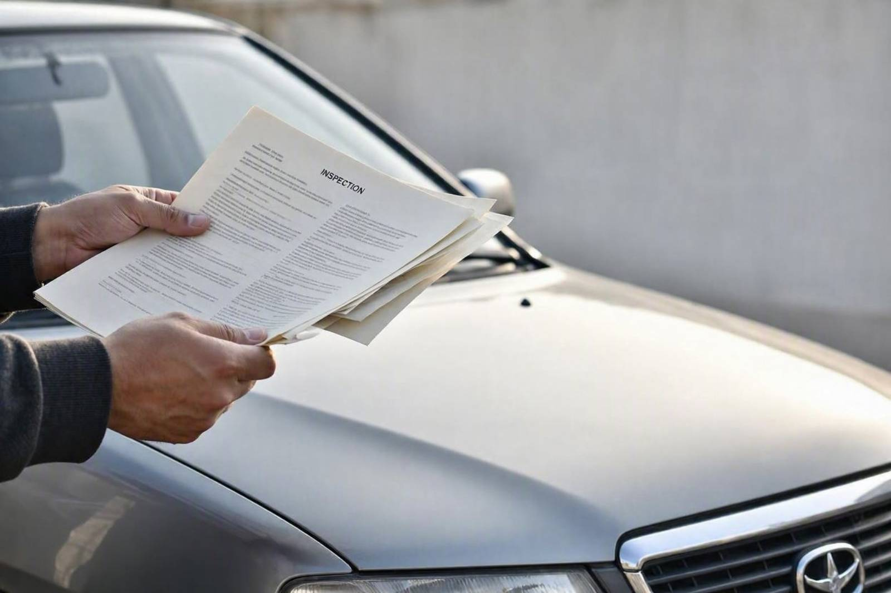
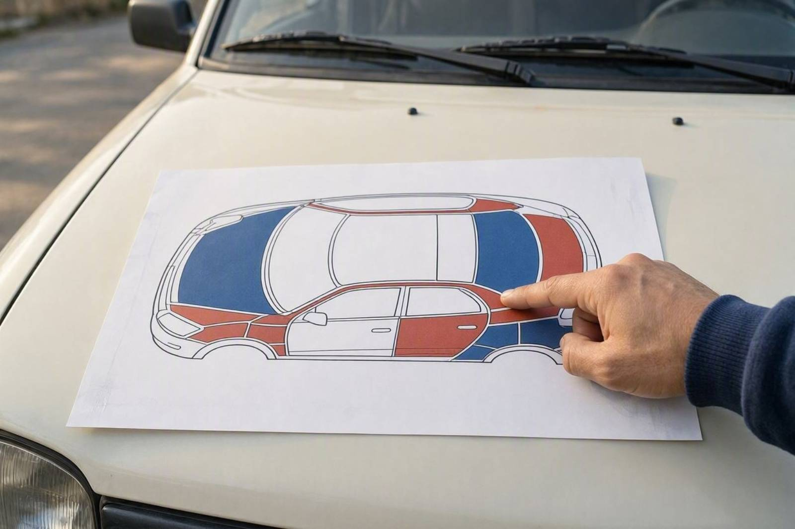
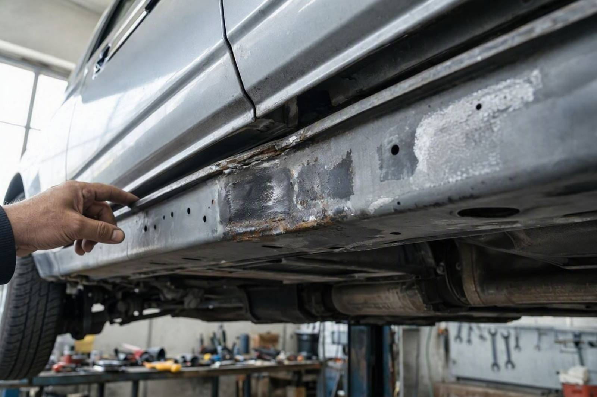

گزارش کارشناسی خودرو را چطور بخوانیم؟
برگه گزارش را گرفتهاید، پر است از اصطلاحهایی مثل دوررنگ، کشیدگی شاسی، تعمیری و رینگزدگی. حالا سؤال واقعی این است: کدام یکی از اینها فقط یک نکته کوچک است و کدام یعنی از این معامله بگذر؟
گزارش کارشناسی خودرو یک برگه فنی است که وضعیت بدنه، رنگ، شاسی، سیستم فنی و کارکرد ماشین را دستهبندی میکند. اما این برگه فقط وقتی به درد میخورد که بدانید هر بخش چه میگوید و کدام یافته باید نگرانتان کند. خیلی از خریدارها یا فقط به جمله آخر گزارش نگاه میکنند یا از دیدن چند اصطلاح فنی میترسند و معامله خوب را از دست میدهند. اگر میخواهید گزارش را با خیال راحت و تخصصی بخوانید، کارماچک همین برگه را طوری تنظیم میکند که تصمیمگیری برایتان ساده باشد. در این مقاله یاد میگیرید یک گزارش را از کجا شروع کنید، اصطلاحها یعنی چه و کدام ایراد خط قرمز است.
گزارش کارشناسی خودرو را از خلاصه کلی به سمت جزئیات بخوانید. اول وضعیت شاسی و سازه را ببینید، بعد رنگ و بدنه، سپس وضعیت فنی و کارکرد. ایرادهای سازهای مثل کشیدگی یا بریدگی شاسی و تصادف سنگین معمولاً دلیل انصرافاند. رنگشدگی جزئی، لکه رنگ و ایرادهای فنی قابل تعمیر بیشتر موضوع مذاکره روی قیمت هستند تا دلیل کنار کشیدن.
- گزارش را از خلاصه شروع کنید، اما هرگز فقط به جمله پایانی اکتفا نکنید.
- بخش شاسی و سازه مهمترین قسمت است و بیشترین وزن را در تصمیم دارد.
- هر اصطلاح یک شدت متفاوت دارد؛ لکه رنگ با تمامرنگ زمین تا آسمان فرق میکند.
- ایراد سازهای معمولاً خط قرمز است، ایراد قابل تعمیر معمولاً موضوع قیمت.
- گزارش، ابزار مذاکره است؛ نه فقط تأیید یا رد ساده خودرو.
گزارش کارشناسی چه بخشهایی دارد
هر مرکز کارشناسی قالب خودش را دارد، اما ساختار کلی گزارشها شبیه هم است. معمولاً این بخشها را میبینید:
- مشخصات و اصالت: تطبیق پلاک، کد شاسی و شماره موتور با مدارک.
- بدنه و رنگ: وضعیت هر قطعه از نظر رنگشدگی، صافکاری و تعویض.
- شاسی و سازه: سلامت یا آسیب دیدن اجزای اصلی بدنه که ساختار خودرو را میسازند.
- وضعیت فنی: موتور، گیربکس، تعلیق، ترمز و نتیجه تست دیاگ.
- کارکرد: عدد کیلومتر و تطبیق آن با فرسایش خودرو.
بیشتر گزارشها یک نمودار بدنه هم دارند که روی آن هر قطعه با یک رنگ یا علامت مشخص شده است. این نمودار سریعترین راه برای دیدن تصویر کلی خودرو است. برای اینکه بدانید یک بررسی کامل دقیقاً چه چیزهایی را پوشش میدهد، مقاله بررسی کامل خودرو قبل از خرید همه این حوزهها را باز کرده است.

روش درست خواندن گزارش
ترتیب خواندن مهم است. اگر از اول سراغ جزئیات بروید، در اصطلاحها گم میشوید. بهتر است از کل به جزء حرکت کنید.
- اول شاسی و سازه:اگر اینجا ایراد جدی باشد، بقیه بخشها اهمیت کمتری پیدا میکنند.
- بعد رنگ و بدنه:ببینید چند قطعه و در چه سطحی رنگ یا تعویض شدهاند.
- سپس وضعیت فنی:موتور، گیربکس و نتیجه دیاگ را جدا از ظاهر بسنجید.
- در پایان کارکرد و اصالت:تناقض بین کیلومتر و فرسایش را کنترل کنید.
معنی اصطلاحهای رایج گزارش
بیشتر سردرگمی خریدارها سر معنی همین چند کلمه است. تعریف کوتاه هر کدام کمک میکند گزارش را دقیقتر بخوانید.
لکه رنگ یعنی یک قسمت کوچک از قطعه رنگ خورده است، معمولاً برای پوشاندن خط یا خراش سطحی.
صافکاری یعنی قطعه بدون تعویض، فرم اصلیاش بازسازی شده است. کیفیت صافکاری در گزارشهای دقیقتر ذکر میشود.
دوررنگ و تمامرنگ یعنی رنگ گسترده روی چند قطعه یا کل خودرو. هرچه سطح رنگ بیشتر باشد، افت قیمت هم بیشتر است. تفاوت این سطحها را در مقاله انواع رنگشدگی خودرو ساده توضیح دادهایم.
تعویض یعنی قطعه اصلی برداشته و قطعه دیگری جای آن نصب شده است. تعویض گلگیر یا درب با تعویض قطعات سازهای فرق دارد.
کشیدگی یا بریدگی شاسی یعنی سازه اصلی خودرو در تصادف تغییر شکل داده یا بریده و جوش داده شده است. این جدیترین اصطلاحی است که در یک گزارش میبینید.
پیش از تصمیم نهایی، خودرو را کارشناسی کنید
اگر هنوز گزارشی ندارید یا به گزارش فروشنده مطمئن نیستید، یک بررسی مستقل میتواند ابهامهای معامله را کمتر کند.
شروع کارشناسی خودروکدام ایرادها دلیل انصرافاند
همه ایرادها یک وزن ندارند. بعضی موارد در گزارش، فارغ از قیمت، سیگنال کنار کشیدن از معامله هستند، مخصوصاً اگر فروشنده آنها را پنهان کرده باشد.
| یافته در گزارش | چرا معمولاً خط قرمز است |
|---|---|
| کشیدگی یا بریدگی شاسی | سازه اصلی آسیب دیده و روی ایمنی و ارزش خودرو اثر ماندگار دارد. |
| تصادف سنگین با جوشکاری سازه | حتی با تعمیر خوب، رفتار خودرو و ارزش معامله تغییر میکند. |
| اختلاف کد شاسی یا شماره موتور با مدارک | مشکل هویتی و حقوقی است و ریسک معامله را بالا میبرد. |
| آثار غرقابی یا آتشسوزی | خرابیهای پنهان برقی و فنی در ادامه ظاهر میشوند. |
| پنهانکاری آشکار فروشنده | وقتی یک ایراد بزرگ کتمان شده، به بقیه اظهارات هم نمیشود اعتماد کرد. |

ایراد شاسی بهتنهایی مهمترین موردی است که باید جدی بگیرید. برای اینکه بدانید این ایراد چطور تشخیص داده میشود و چه نشانههایی دارد، راهنمای تشخیص شاسی ضربه خورده خودرو کمککننده است.
کدام ایرادها قابل مذاکرهاند
در طرف دیگر، خیلی از ایرادها بهخودیخود دلیل رد کردن خودرو نیستند. اینها بیشتر روی قیمت اثر میگذارند و اگر درست حساب شوند، معامله همچنان منطقی است.
- لکه رنگ یا صافکاری محدود روی قطعات غیرسازهای مثل گلگیر و درب.
- تعویض یک قطعه بدنهای که با کیفیت انجام شده و سازه را درگیر نکرده.
- ایرادهای فنی قابل تعمیر مثل نشتی جزئی، لنت یا قطعات مصرفی.
- فرسایش طبیعی متناسب با کارکرد و سن خودرو.
نکته مهم اینجاست که «قابل مذاکره» یعنی باید هزینه تعمیر یا افت ارزش را از قیمت کم کنید، نه اینکه نادیدهاش بگیرید. برای همین بعد از خواندن گزارش، منطقی است سراغ قیمتگذاری خودرو بروید تا اثر این ایرادها روی ارزش واقعی معامله مشخص شود.
اشتباههای رایج در خواندن گزارش
حتی وقتی گزارش دقیق است، طرز خواندن اشتباه میتواند به تصمیم غلط منجر شود. رایجترین خطاها:
- خواندن فقط جمله پایانی و بیتوجهی به بخش شاسی و سازه.
- یکسان دیدن همه رنگشدگیها، بدون توجه به سطح و محل آنها.
- ترسیدن از هر اصطلاح فنی و رد کردن یک خودروی سالم به قیمت خوب.
- بیتوجهی به تاریخ گزارش؛ گزارش قدیمی وضعیت امروز خودرو نیست.
- مقایسه نکردن یافتههای گزارش با قیمت اعلامی فروشنده.
گزارش کارشناسی یک عکس لحظهای از وضعیت خودرو است. اگر بین کارشناسی و معامله فاصله زیادی افتاده یا خودرو جابهجا شده، بهتر است وضعیت را دوباره کنترل کنید.
کارماچک گزارش را چطور برای شما روشن میکند
کارماچک خدمات کارشناسی خودرو را برای بررسی فنی، رنگ، بدنه و عوامل مؤثر بر ارزش معامله ارائه میدهد. فقط ایراد خودرو را شناسایی نمیکنیم؛ اثر آن روی هزینه تعمیر و ارزش واقعی معامله را هم مشخص میکنیم. اگر میخواهید یک گزارش روشن و قابلفهم داشته باشید که تصمیم خرید را برایتان ساده کند، میتوانید کارشناسی خودرو قبل از خرید را ثبت کنید.
جمعبندی
خواندن گزارش کارشناسی خودرو یعنی حرکت از تصویر کلی به سمت جزئیات و شناختن وزن هر ایراد. بخش شاسی و سازه بیشترین اهمیت را دارد و ایرادهای این حوزه معمولاً دلیل انصرافاند. رنگشدگی جزئی، تعویض باکیفیت قطعات بدنهای و ایرادهای فنی قابل تعمیر بیشتر موضوع مذاکره روی قیمت هستند. اگر گزارش را با این نگاه بخوانید، دیگر نه از یک اصطلاح فنی میترسید و نه یک ایراد بزرگ را دستکم میگیرید.
با یک گزارش روشن، مطمئن تصمیم بگیرید
پیش از پرداخت پول، وضعیت واقعی خودرو را با یک بررسی دقیق و گزارش قابلفهم روشن کنید.
ثبت درخواست کارشناسیسؤالات متداول
گزارش کارشناسی خودرو را از کجا باید شروع کنم؟
از خلاصه کلی شروع کنید تا تصویر اولیه دستتان بیاید، اما همانجا نمانید. بلافاصله سراغ بخش شاسی و سازه بروید، چون مهمترین قسمت گزارش است. بعد رنگ و بدنه، سپس وضعیت فنی و در پایان کارکرد و اصالت را بخوانید. این ترتیب کمک میکند در جزئیات گم نشوید.
ایراد شاسی حتماً یعنی خودرو را نخرم؟
در بیشتر موارد ایراد سازهای مثل کشیدگی یا بریدگی شاسی خط قرمز است، چون روی ایمنی و ارزش خودرو اثر ماندگار دارد. با این حال شدت آسیب و کیفیت تعمیر فرق میکند. تشخیص دقیق این موضوع به بررسی تخصصی نیاز دارد و بهتر است فقط بر اساس یک اصطلاح در برگه تصمیم قطعی نگیرید.
تفاوت لکه رنگ با تمامرنگ در گزارش چیست؟
لکه رنگ یعنی یک قسمت کوچک از یک قطعه رنگ خورده، معمولاً برای پوشاندن خراش سطحی. تمامرنگ یعنی کل بدنه رنگ شده است. هرچه سطح رنگ بیشتر باشد، هم احتمال پوشاندن ایراد بزرگتر و هم افت قیمت بیشتر است. برای همین سطح و محل رنگ مهمتر از خود وجود رنگ است.
گزارش میگوید خودرو تعویضی دارد؛ نگران باشم؟
بستگی به قطعه دارد. تعویض یک قطعه بدنهای مثل درب یا گلگیر که با کیفیت انجام شده و سازه را درگیر نکرده، معمولاً قابل مذاکره است. اما تعویض یا جوشکاری قطعات سازهای موضوع جدیتری است. محل تعویض را در گزارش پیدا کنید و اثر آن را روی قیمت حساب کنید.
آیا گزارشی که فروشنده میدهد قابل اعتماد است؟
گزارش فروشنده میتواند درست باشد، اما دو نکته را کنترل کنید: تاریخ گزارش و مرجع صادرکننده آن. اگر گزارش قدیمی است یا خودرو بعد از آن جابهجا شده، وضعیت فعلی را نشان نمیدهد. برای معاملههای مهم، یک بررسی مستقل و بهروز ریسک کمتری دارد.
آیا گزارش کارشناسی تضمین سلامت خودرو است؟
خیر. گزارش ریسک معامله را بهشدت کم میکند اما تضمین بیخطا نیست. گزارش وضعیت خودرو را در لحظه بررسی نشان میدهد و بعضی ایرادها فقط در شرایط خاص بروز میکنند. گزارش را بهعنوان ابزار تصمیمگیری آگاهانه ببینید، نه سند قطعی بدون خطا.